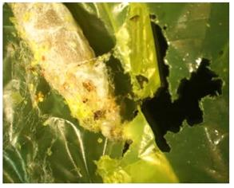
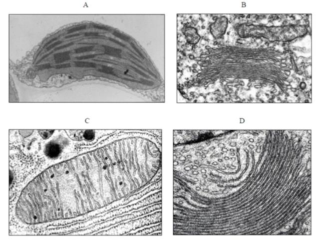
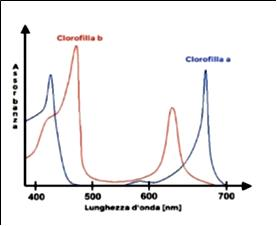
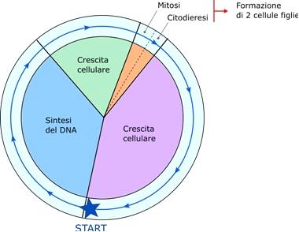
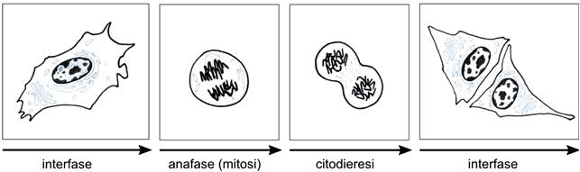
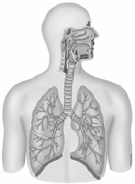
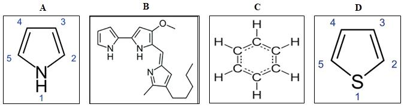
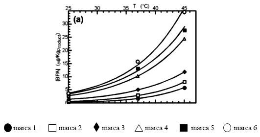
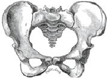

- Autore
- Argomento
- Organizzazione o istituto
- Data

PARTE PRIMA
Una farfalla ci salverà dalla plastica?
Le 6 domande che seguono riguardano una scoperta avvenuta per caso che potrebbe essere utile per contrastare il grave problema dell'inquinamento dovuto alla plastica. Esse sono introdotte da un testo al quale dovrai fare riferimento per fornire le risposte. Considera attentamente tutti i dati e soprattutto quelli forniti dal docente e quelli proposti dagli studenti: anche se l'argomento è insolito, essi ti metteranno in grado di fornire le risposte.
Mario, Giulia, Ettore e Alessandra sono quattro studenti ai quali l'insegnante fa leggere la seguente notizia apparsa su una pubblicazione del 2017:
Federica Bertocchini è una biologa molecolare italiana che lavora in Spagna e ha l'hobby dell'apicoltura. Un giorno, dopo aver liberato i propri alveari dalle larve della farfalla Galleria mellonella, esca nota ai pescatori con il nome di camola del miele, ha rinchiuso le stesse in un sacchetto di plastica costituito da polietilene ma, dopo solo qualche ora, si è accorta con meraviglia che i bruchi avevano bucato il sacchetto e si erano liberati. Ne ha parlato con Paolo Bombelli (un biochimico italiano che lavora all'Università di Cambridge) e insieme hanno studiato il fenomeno pubblicando i risultati su Current Biology. I due studiosi hanno riportato nell'articolo di essere stati sorpresi del fatto che all'interno del bruco non hanno trovato plastica ma glicole etilenico; da ciò hanno dedotto che il bruco è in grado di biodegradare il polietilene. La definizione dei dettagli molecolari della capacità di Galleria mellonella di digerire il polietilene richiede ulteriori studi, dato che al momento non è chiaro se sia dovuta direttamente al suo organismo o all'attività enzimatica della sua flora batterica.
.
I quattro ragazzi si mettono a riflettere e a discutere tra loro ed esprimono ciascuno le proprie considerazioni sulla validità scientifica di quanto riportato nell'articolo: - Secondo Mario la scoperta è casuale e non ha quindi valore scientifico. - Anche secondo Giulia quanto riportato nell'articolo non ha nessuna importanza scientifica, perché nessun animale può digerire la plastica. - Ettore ritiene invece che gli autori della pubblicazione, prima di affermare quanto riportato nell'articolo, devono necessariamente avere allestito delle prove per dimostrare la validità delle loro affermazioni. - Secondo Alessandra, infine, le farfalle di Galleria mellonella e i bruchi non hanno nessun rapporto tra di loro. L'affermazione corretta è quella di:
L'insegnante chiede ai ragazzi a quale gruppo di animali appartiene la farfalla oggetto dello studio: - Secondo Mario Galleria mellonella è un insetto appartenente ai Lepidotteri. - Secondo Giulia è un insetto appartenente ai Ditteri. - Secondo Ettore è un Artropode ma non è un insetto. - Secondo Alessandra, infine, non è un neanche un Artropode perché i bruchi non hanno l'esoscheletro. L'affermazione corretta è quella di:
L'insegnante chiede ai ragazzi di formulare alcune ipotesi sulle caratteristiche della Galleria mellonella. - Secondo Mario le farfalle e i bruchi sono due animali diversi che rappresentano due modi diversi di mimetizzarsi nell'ambiente. - Secondo Giulia le farfalle e i bruchi sono due stadi diversi dello stesso animale che rappresentano due diverse fasi del loro ciclo vitale che è caratterizzato dalla metamorfosi. - Secondo Ettore bruchi e farfalle hanno anche abitudini alimentari e ruoli ecologici diversi. - Secondo Alessandra, infine, la presenza contemporanea di bruchi e farfalle negli alveari evidenzia il fatto che essi nell'ambiente svolgono lo stesso ruolo ecologico. Le affermazioni di quali studenti sono corrette?
L'insegnante chiede ai ragazzi di ipotizzare quale rapporto c'è tra larve e habitat degli alveari. - Secondo Mario Galleria mellonella ha deposto le uova all'interno degli alveari, dove le larve sono cresciute digerendo la cera d'api. - Anche secondo Giulia è così; anzi, questo fatto spiega perché le larve vengano usate come esca dai pescatori: esse sono dolci in quanto possono ingerire anche miele. - Secondo Ettore la cera d'api e la plastica hanno una struttura chimica troppo diversa per cui non è pensabile che un organismo sia in grado di digerirle entrambe. - Secondo Alessandra, anche se in condizioni normali le larve non mangiano la plastica, in caso di bisogno riescono ad adattarsi, riuscendo a digerirla. L'unica affermazione NON corretta è quella di:
Quale differenza presenta la plastica rispetto al glicole etilenico?
Con il loro lavoro i due studiosi:
PARTE SECONDA
Il colore delle foglie
Le 5 domande che seguono riguardano i pigmenti organici vegetali. Utilizza le informazioni contenute nel brano introduttivo e nelle figure che accompagnano alcune delle domande per rispondere.
I responsabili della colorazione delle piante che osserviamo in natura sono i pigmenti, molecole organiche prodotte dai vegetali stessi e che svolgono svariate funzioni. Ad esempio, possono proteggere da radiazioni dannose oppure catturare parte della luce proveniente dal sole per convertirla in energia. Spesso le piante producono più pigmenti diversi contemporaneamente, ognuno con un determinato scopo oppure con funzioni leggermente diverse all'interno dello stesso processo: questa seconda situazione si ha nel caso della fotosintesi. Le importanti capacità fornite dai pigmenti derivano dal fatto che tali molecole regolano l'assorbimento di radiazione da parte dei tessuti: è per questo motivo che ne determinano anche la colorazione. Fra i pigmenti più noti ci sono le clorofille, i carotenoidi (fra cui il betacarotene delle carote) e le antocianine di cui sono ricchi i frutti rossi.
Le foglie della maggior parte delle piante hanno una colorazione verde perché le clorofille:
In autunno le foglie degli alberi assumono colorazioni che vanno dal giallo al rosso-bruno. Perché?
Osserva le figure seguenti, che rappresentano fotografie al microscopio elettronico di quattro organelli presenti nelle cellule vegetali.  Quale di loro ha la maggiore concentrazione di clorofilla?
Osserva il grafico seguente, che raffigura gli spettri di assorbimento dei due tipi di clorofilla più comuni. Si ricorda che il Sole ha irradianza (cioè potenza per unità di area) massima nel visibile, con picco attorno ai 500 nm e che l'attraversamento dell'atmosfera terrestre sposta leggermente in avanti e appiattisce il picco suddetto.  Il grafico suggerisce che la fotosintesi clorofilliana si è sviluppata per massimizzare l'assorbimento:
Le clorofille "a" e "b" sono indispensabili per svolgere il processo con cui le piante superiori procurano l'energia di cui necessitano, denominato appunto fotosintesi clorofilliana. Quale delle seguenti affermazioni che riguardano la fotosintesi clorofilliana è ERRATA?
PARTE TERZA
Il ciclo cellulare
Le 6 domande che seguono riguardano il ciclo cellulare negli eucarioti. Le domande sono introdotte da un testo al quale potrai fare riferimento per fornire le risposte.
Il ciclo cellulare delle cellule eucariotiche scandisce le fasi di crescita, di replicazione del materiale genetico e di divisione cellulare. Il ciclo cellulare si compone di diverse fasi e di alcuni essenziali punti di controllo, o checkpoint: questi permettono di accertare che la fase precedente del ciclo sia stata portata a termine correttamente, prima di entrare in quella successiva. Le fasi del ciclo cellulare sono denominate G1, G2, M e S (riportate in ordine alfabetico, non nell'ordine con cui si succedono nel ciclo), e sono le stesse in tutti gli organismi eucarioti, dai lieviti agli animali.
Uno dei primi organismi in cui il ciclo cellulare è stato studiato è il lievito Saccharomyces cerevisiae. In esso è presente un unico fondamentale checkpoint, spesso chiamato START. Quando passa il punto di START, la cellula di lievito ha già preso la decisione chiave, poiché sono già stati attivati alcuni processi irreversibili che la condurranno alla divisione cellulare (mitosi). Prima di superare il checkpoint START, la cellula presenta un DNA non replicato e ha la possibilità di entrare in una fase di quiescenza (G0), o semplicemente di rimanere nella fase precedente del ciclo cellulare, invece di intraprendere il percorso verso la mitosi se le condizioni ambientali non sono ottimali.

In base a quanto affermato, tra quali fasi successive del ciclo cellulare è posizionato il punto di START?
Quale delle seguenti condizioni può verosimilmente indurre il superamento del checkpoint START?
Il contenuto in DNA varia nelle diverse fasi del ciclo cellulare. Quale delle seguenti affermazioni, riguardo a una cellula somatica umana, è corretta?
La transizione alla fase M, che comprende i processi successivi di mitosi e citodieresi, comporta molti cambiamenti nella cellula. Con l'entrata nella profase, il primo passo della mitosi, il citoscheletro della cellula si disorganizza, facendo così perdere alla cellula la sua forma peculiare (come si può vedere nella cellula nella figura sottostante). Inoltre, l'involucro nucleare si frammenta e i cromosomi appaiono condensati.  Quale delle seguenti affermazioni riguardanti cellule animali è ERRATA?
Durante il ciclo cellulare viene replicato il DNA. In realtà è più corretto parlare di replicazione della cromatina, perché non è solo il DNA che si duplica ma anche le proteine a esso associate, le quali sono importanti per definire la struttura della cromatina e per la regolazione dell'espressione genica. In base a ciò, quale dei seguenti processi deve essere particolarmente attivo nella fase del ciclo cellulare in cui si ha la replicazione del DNA?
La transizione tra le diverse fasi del ciclo cellulare è strettamente controllata da molti fattori: una famiglia di proteine, quella delle cicline, è necessaria per la progressione del ciclo cellulare. La concentrazione di ogni particolare ciclina varia ciclicamente durante il ciclo cellulare, grazie a processi di sintesi e degradazione proteica. Con quale tecnica pensi che si possa rilevare la presenza di una ciclina in una particolare fase del ciclo cellulare?
PARTE QUARTA
Facile come respirare…
Le 5 domande che seguono riguardano l'apparato respiratorio. Esse sono introdotte da un breve testo e da una figura; ad essi dovrai fare riferimento per fornire le risposte.
Il sistema respiratorio è deputato agli scambi gassosi del sangue con l'ambiente esterno al corpo. È formato dalle vie aeree e dai polmoni e condivide alcuni organi con il sistema digerente.

Quale di queste strutture fa parte esclusivamente del sistema respiratorio?
Trachea e bronchi presentano una componente rigida formata da una serie di anelli quasi completi che impediscono il collasso delle loro pareti durante gli atti respiratori. Da che tipo di tessuto sono costituiti?
Quale tragitto compie il biossido di carbonio durante l'espirazione?
Nell'arteria polmonare scorre sangue:
Recentemente si è scoperto che i polmoni hanno una scorta di cellule staminali. Queste sarebbero in grado di porre rimedio ai danni prodotti su tutte le componenti dell'organo, come i bronchioli o gli alveoli. Si tratterebbe quindi di cellule:
PARTE QUINTA
Rosso, ingannevole e pericoloso
Le 4 domande che seguono riguardano un microrganismo molto particolare capace di produrre un pigmento di colore rosso. Esse sono introdotte da un breve testo e da una figura; a essi dovrai fare riferimento per fornire le risposte.
Nel 1823 il chimico italiano Bartolomeo Bizio assegnò il nome di Serratia marcescens ad un batterio Gram negativo: onorò, così, il fisico fiorentino Serafino Serrati e tenne conto del fatto che alcuni ceppi, dopo aver prodotto un pigmento rosso intenso, marciscono velocemente in una massa fluida mucillaginosa. Per molti anni i ceppi pigmentati furono denominati Bacillus prodigiosus perché considerati la causa di eventi creduti miracolosi, come le macchie di sangue comparse nel pane distribuito ai soldati macedoni di Alessandro Magno (assedio di Tiro, 332 a.C.) o sulle ostie consacrate nel Medio Evo (1171 a Ferrara, 1263 a Bolsena) o sulla polenta a Legnano (1819). Tutti questi eventi possono facilmente essere spiegati con la crescita di colonie pigmentate di Serratia presente, come contaminante, nella farina.
Serratia marcescens è un patogeno umano responsabile oggi di pericolose, talvolta mortali, infezioni ospedaliere. Molti ceppi di Serratia marcescens sono resistenti a diversi antibiotici a causa della presenza di un plasmide che trasporta uno o più geni che ne codificano la resistenza. Serratia è un batterio opportunista con una forte predilezione per ospiti immunocompromessi o debilitati da precedenti terapie farmacologiche o che hanno utilizzato particolari dispositivi medici ospedalieri come i cateteri.
Un batterio Gram negativo è:
Il pigmento rosso intenso di Serratia marcescens è chiamato prodigiosina e ha una massa molare di 323,432 g/mol. Quale delle seguenti formule di struttura rappresenta la prodigiosina? 
Leggi la seguente definizione di plasmide nella quale due termini, indicati in grassetto, sono in alternativa: Un plasmide è un elemento genetico cromosomico/extracromosomico in grado di replicarsi autonomamente all'interno della cellula ospite, portatore di geni che veicolano informazioni non essenziali per la vita della cellula e in grado di trasferirsi da una cellula ad un'altra per coniugazione/trasduzione. Le parole corrette da inserire sono:
Le pericolose e talvolta mortali infezioni ospedaliere da Serratia sono da addebitare a:
PARTE SESTA
Anatomia e fisiologia vegetale
Le 5 domande che seguono riguardano elementi di anatomia e fisiologia vegetale.
Nei tessuti vegetali, quali di questi tessuti svolge la funzione di conduzione della linfa grezza?
Quale di questi fusti modificati è costituito da un breve fusto di forma conica e da numerose foglie modificate per la funzione di riserva?
Da che cosa è composto il gineceo di un fiore?
Quale di queste affermazioni relative al meristema del germoglio è FALSA?
Per impollinazione chirotterogama si intende l'impollinazione che ha per vettore:
PARTE SETTIMA
I lipidi
Le 4 domande che seguono riguardano i lipidi. Esse sono corredate da un breve testo e da una immagine ai quali dovrai fare riferimento per fornire le risposte.
I lipidi sono uno dei grandi gruppi di composti organici che risultano insolubili in acqua, ma solubili in solventi apolari in quanto formati prevalentemente da atomi di carbonio e idrogeno con legami scarsamente polari.
Essi svolgono diversi ruoli fondamentali per gli organismi viventi: ad esempio, costituiscono le membrane cellulari di tutti gli organismi viventi e sono anche utilizzati come riserva di energia, grazie alla loro alta densità energetica (energia disponibile per unità di massa).
I lipidi sono molto importanti anche dal punto di vista dell'alimentazione umana e dell'industria, grazie al fatto che possono avere temperature di fusione (e quindi, stato fisico a temperatura ambiente) molto diverse, a seconda della struttura delle molecole.
Quali tra i seguenti lipidi NON fanno parte della struttura di una tipica membrana cellulare di una cellula eucariote?
Per quale motivo i lipidi hanno un'alta densità energetica?
Quale dei seguenti lipidi ti aspetti di trovare prevalentemente in un prodotto alimentare di origine vegetale?
In una cellula procariote, dove avviene la sintesi dei lipidi di membrana?
PARTE OTTAVA
Miscellanea
Le seguenti 5 domande riguardano argomenti sia di biologia funzionale sia di biologia evolutiva e sono tutte indipendenti luna dall'altra.
In un esperimento condotto in una varietà di polli, si osserva che dagli incroci tra due individui eterozigoti per un certo carattere si ottengono alla prima generazione filiale 2/3 di individui eterozigoti e 1/3 di individui omozigoti dominanti. Come può essere interpretato questo risultato?
In ecologia il fenomeno dello spostamento dei caratteri consiste nel fatto che:
Un individuo si presenta dal proprio medico riferendo perdita di peso, tachicardia e scarsa sopportazione del caldo. Il medico sospetta che sia affetto da ipertiroidismo. La quantificazione nel sangue di quale delle seguenti molecole può permettere al medico di distinguere tra cause di ipertiroidismo secondarie, cioè legate ad un'attività eccessiva dell'ipofisi, e primarie, cioè legate a un'attività eccessiva della tiroide?
Le lattine normalmente in commercio hanno un rivestimento interno protettivo a base di resine epossidiche contenente il Bisfenolo A (BPA). Il BPA è una molecola di origine sintetica nota per i suoi effetti avversi sulla salute umana e animale. Studi scientifici hanno dimostrato la migrazione del BPA dal contenitore all'alimento in esso contenuto. Nella figura sottostante sono riportati i risultati ottenuti analizzando il contenuto di BPA in pomodori pelati in lattina al variare della temperatura di conservazione della lattina. Sono stati analizzati 6 marche in commercio e la migrazione del BPA dal contenitore all'alimento si è verificata in tutti i campioni indipendentemente dal valore economico del prodotto analizzato.  Secondo i risultati riportati nella figura precedente:
Quale di queste ossa fa parte del bacino? 